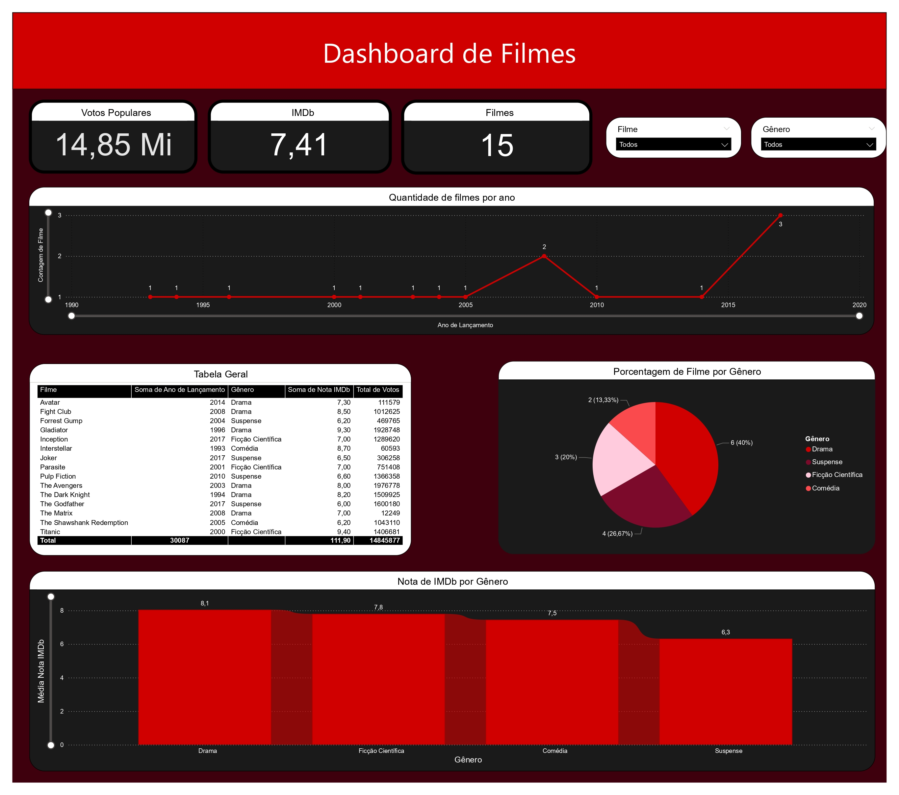
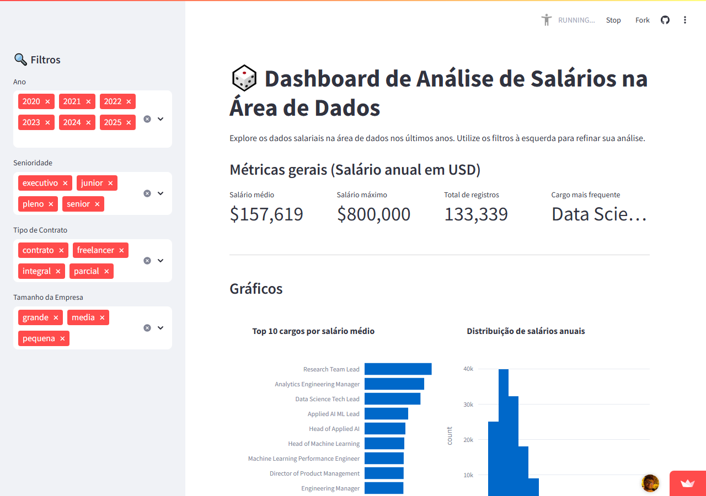
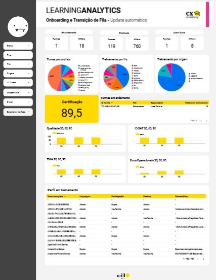
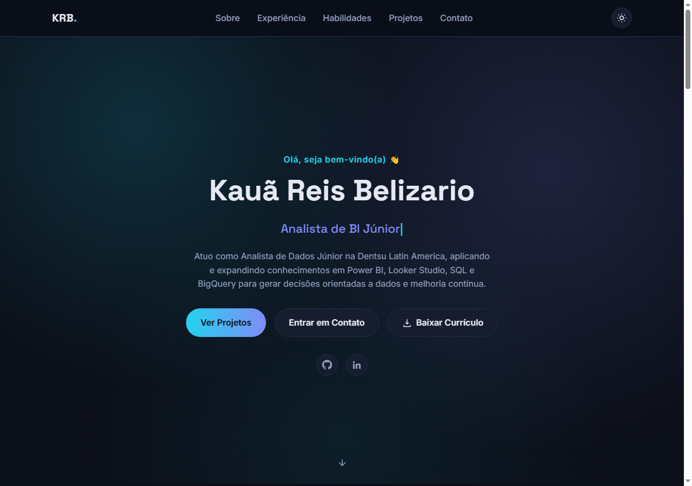

Power BI: O que você precisa saber para conseguir seu estágio
Academia do Universitário
Ver certificado →Olá, seja bem-vindo(a) 👋
Analista de Dados com experiência na Dentsu Latin America, aplicando e expandindo conhecimentos em Power BI, Looker Studio, SQL e BigQuery para gerar decisões orientadas a dados e melhoria contínua. Atualmente em busca de novas oportunidades.
Sobre mim
Olá! Me chamo Kauã e sou apaixonado por transformar dados em decisões. Atuei como Analista de Dados na Dentsu Latin America até julho de 2026, onde desenvolvi dashboards em Looker Studio, consultas SQL avançadas no BigQuery e análises de comportamento de usuários a partir do Google Analytics 4. Atualmente estou em busca de uma nova posição para seguir aplicando e evoluindo essas habilidades.
Gosto de resolver problemas reais com números: estruturar hipóteses, investigar comportamentos e transformar dados em recomendações que geram resultado - com histórico de reduzir tempo de processos manuais e ampliar a confiabilidade e o uso de dashboards por times de negócio. Sou formado em Análise e Desenvolvimento de Sistemas pela Universidade São Judas Tadeu, concluído em jun/2026.
Experiência
Fev/2026 - Jul/2026 · 6 meses
Ago/2025 - Fev/2026 · 7 meses
Abr/2025 - Ago/2025 · 5 meses
Jan/2024 - Mar/2025 · 1 ano e 3 meses
Concluído em Jun/2026
Universidade São Judas Tadeu
Habilidades
Outras ferramentas: Pipefy (intermediário), n8n (básico) e DAX (Power BI). Idiomas: Inglês e Espanhol (intermediário - leitura e escrita).
Certificados
Cursos e certificações que venho concluindo ao longo da minha trajetória.
Academia do Universitário
Ver certificado →Projetos
Alguns dos projetos que venho desenvolvendo em Power BI, Looker Studio e neste próprio site.

Painel interativo em Power BI com ETL e medidas DAX para explorar dados de filmes.

Dashboard interativo sobre salários na área de dados, construído com pandas, Streamlit e Plotly (Imersão Dados Alura).

Painel em Looker Studio com KPIs de projetos e treinamentos internos.

Este site: desenvolvido em HTML, CSS e JavaScript para exibir minha trajetória e projetos de dados.
Contato
Estou aberto a oportunidades, projetos e trocas sobre dados. Envie uma mensagem pelo formulário ou fale comigo diretamente:
kauabeli21@gmail.com (11) 99499-7776 Baixar Currículo